GitHub for Frontend
From an outside perspective, it seems that one of the goals of the Cloud Resume Challenge is to introduce new pracitioners to tools that will make their lives easier in developing future projects. Tools like GitHub processes, Continuous Integration/Continuous Development, infrastructure as code... all ways that seem apply grease to the sticky gears of development.
The piece that feels most approachable and useful to me at this early stage is the front end continuous development pipeline. The goal will be: any code that gets pushed to the main branch on a GitHub repository will be pushed to my S3 bucket to instantly become the new static site. It seems this will hopefully be quite straightforward using GitHub actions - let's try.
Starting a GitHub repository from the GitHub UI is very straightforward. Choose a name. Choose public vs. private. Generate some default files (or not). Hit create. Boom.
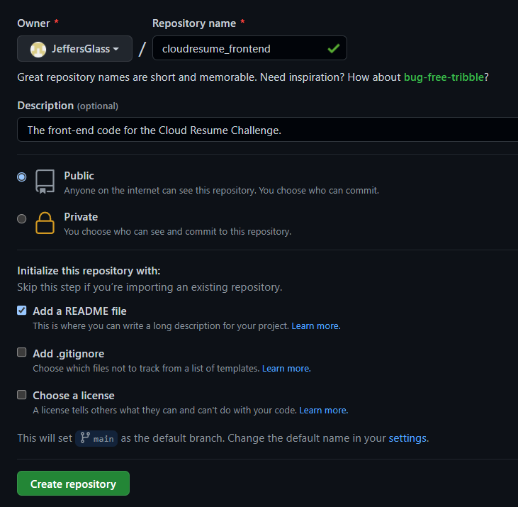
So that's the familiar part, now into the unknown.
Thankfully, Github has a very approachable page titled Understanding GitHub Actions, which provides a lot of context and vocabulary upfront for how to get started with Actions. And as usual, I suspect I'll be better off learning with dirty hands. So I'll start by initializing the minimum viable workflow and see what that looks like:
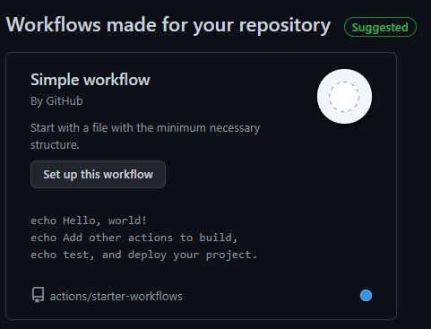
Well let's see what that gets us. It looks like it automatically populates a file called "blank.yml" in the ./github/workflows directory. The contents is:
So, thanks to lots of generous comments, it seems we have a GitHub action to launches an Ubuntu instance, checks out the code in the repository, echoes a handful of messages to the logs, then shuts down. This should happen whenever a push or pull request to the main branch occurs. That should be pretty straightforward to test by making changes to the Readme.md file we created during repository setup.
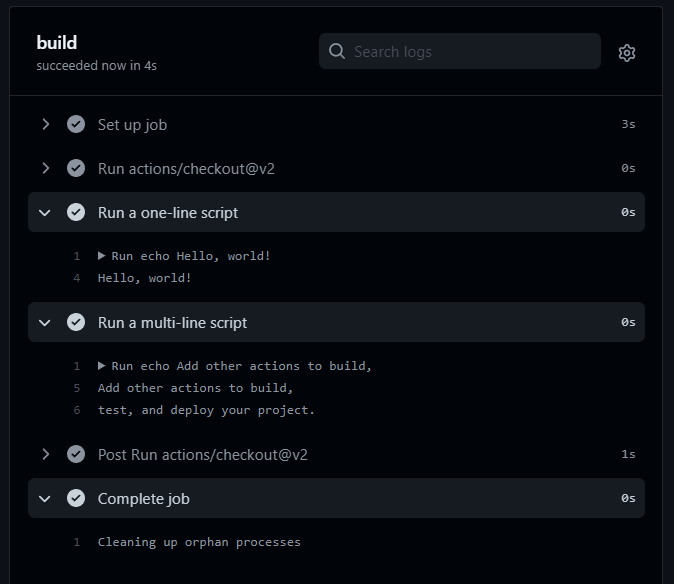
Well that sure was easy. As expected - an instance was launched, the Repo's code was cloned, a handful of Echo commands got executed.
So now, let's see if we can't figure out how to use an action to push content to our S3 bucket. For now, I think I'm going to set it up to just push all of the content in a specific folder to a bucket, but ultimately, I'm contemplating using a static site generator like Hugo or Jekyll to generate the site, and integrate that build process into a GitHub action of its own.
In several places, I've seen it suggested to create an User using the Identity Manager in AWS to generate access keys that will only allow GitHub actions the bare minimum functions necessary to complete their role. Spinning up a new role is easy in IAM, and I'm duplicating the minimum permissions in GitHub's Enabling GitHub Actions with Amazon S3 article:
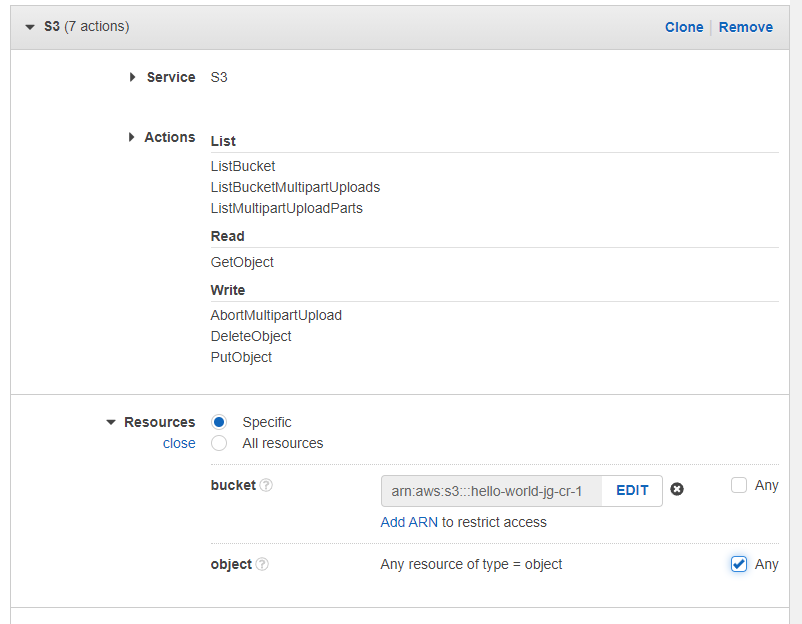
With that out of the way, and with my new role's Access Key and Secret Access Key written down, it's back over to GitHub to implement the action.
Like any good process, I'll start by stealing someone else's good idea. In this case, I'll use the S3 Sync Action available in the GitHub marketplace. This was easy enough to drop into my repo, and to set the relevant AWS access keys as GitHub secrets so they're not publicly visible.
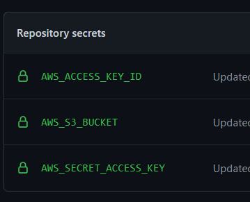
Error oh no!
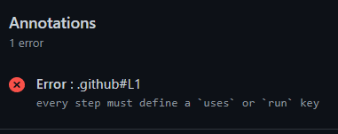
Typo in Workflow file (extra '-')
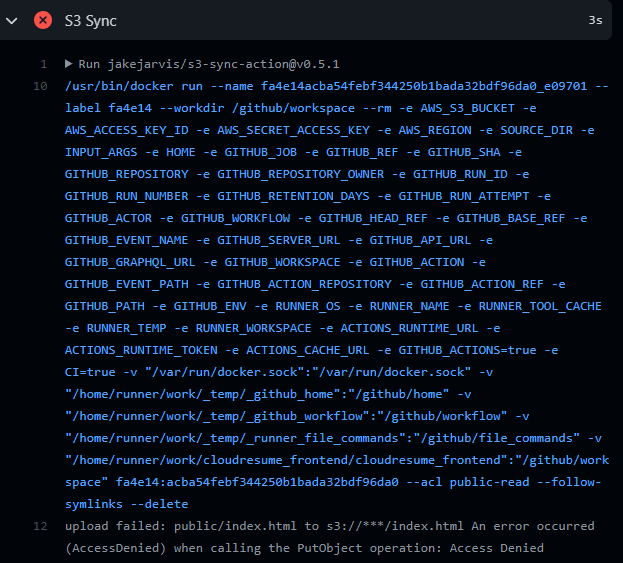
Error in permissions - needed to specify all objects in bucket are valid, as well as adding a couple of additional permissions per this StackOverflow post.
Curiously, accessing directly via the Index.html object URL shows me one thing, but going to resume.jeff.glass shows the original content:
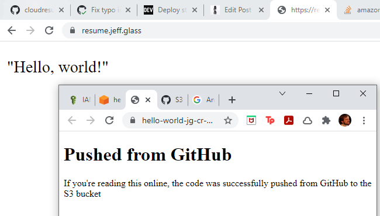
Ahhh, of course - directly accessing the resource shows the contents of the bucket, but resume.jeff.glass is pointing to the Cloudflare distribution I created, which still has cached content. So I need to invalidate the Cloudflare cache as part of this workflow as well, so that users will always see the most recent content when requested.
Of course, that's something I can do manually in the Cloudflare console:

And now everything looks right:
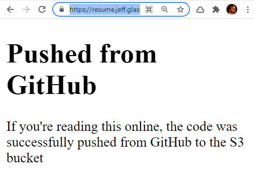
But of course, the whole point is to automate this step. Let's see if we can work out how to add this functionality to the workflow we already have. Indeed, it looks like there's an outstanding pull request with exactly this functionality, by InscribeAI and Jake Garth. So really, what I need to figure out is the proper syntax for using this version of the action, as opposed to the original version.
For one thing, I'll add the CF Distribution ID as a repository secret. Then I'll change the action to point at InscribeAI version via some textual changes - just changing the author's name and adding the necessary environment key and secret.
This seems to have run successfully - let's make one more change to the Index.html file and see if our changes happen in when viewed from the Cloudfront Distribution:
Well, sadly no, no Cloudfront distribution.
Well, looks like it's time to fork this GitHub repo and see about forming our own action. (There are surely other actions on the GitHub marketplace, but this seems like I challenge I could learn from.)
First things first, let's fork the repo that we've been using so far to grab our own version.
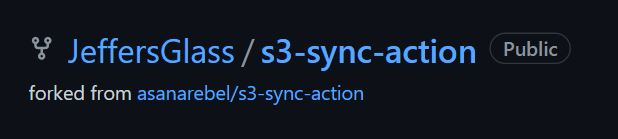And I'll use the Git GUI program to grab a copy of the code from the Repo to work with locally.
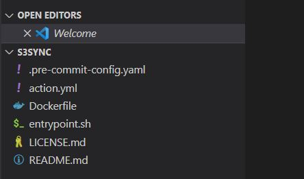
Just to make sure that I am indeed running the action from my local repository clone of the action (instead of the original jakejarvis version because there's something I might not understand), I'll add an output to the action.yml file to get a string output from the action. This is all per the GitHub Actions Metadata Syntax page.
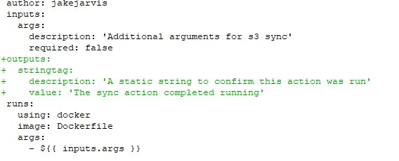
I'll also add a few echo statements to the entrypoint.sh file that runs in the Docker container, to hopefully validate that this shell script is running and whether it's entering the cloudfront invalidation step. Basically, I want to know if my setup (workflow, actions, and script) isn't properly creating a Cloudfront invalidation, or whether it's not running at all.
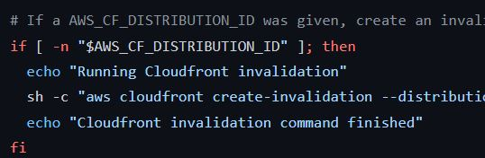
Hmm, the results of those echo commands don't appear in our output. And neither does the output of the aws cloudfront command that the shell script is using. Which, according to the AWS CLI Reference, should be pretty verbose. I'm also not seeing the output from the lone echo command I stuck at the top of the shell script. Maybe this script isn't actually running?
Let's add a RUN echo command to the Dockerfile in our action to see if we can get that output.
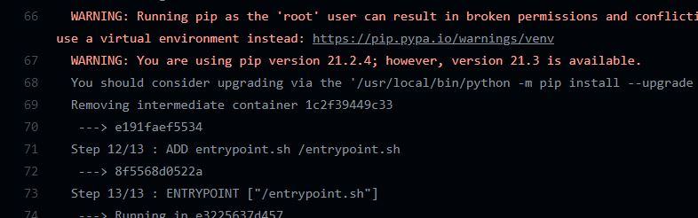
And no, it doesn't seem like we can - we should see that echo command right here between the Pip invocation and adding the entrypoint. So whatever action I'm running, it doesn't seem to be the one I'm modifying in this dockerfile. Let's se if we can't figure out why.
One thing that stands out is that I'm targeting a specific release version of this action - namely, 0.5.1 just like the action I forked. Perhaps I need to create a new release with these changes, and then target that? I'll use the GitHub UI to create a 0.5.1.1 release and see if I can target that successfully and see the results of my echo commands.
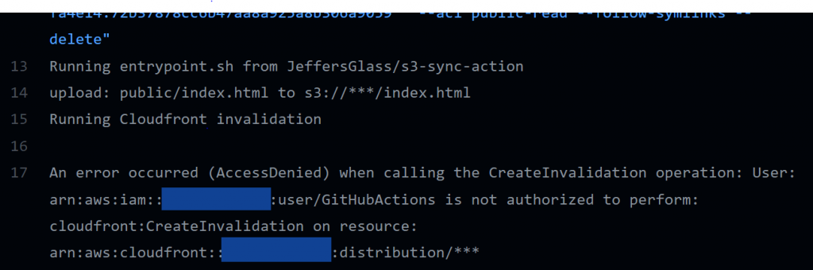
Aha! There's the echos, and a new error to track down! So I was committing new code to the repo, but because the action was referencing a previous release of the action, none of it made any difference.
It seems the action specification allows for targeting a branch of the action, rather than a specific release, which would make development more straightforward for sure. Just for yucks, let's see what happens when I remove any specifier and just use uses:JeffersGlass/s3-sync-action:
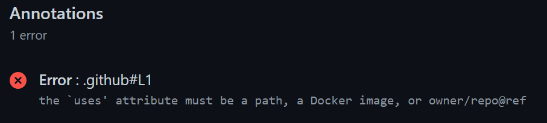
Ahh, very broken. But setting it to target JeffersGlass/s3-sync-action@master works as intended. Well, the error with the Cloudfront distribution is the same, but at least I can now see changes to the action as soon as I commit them, rather than needing to create another release.
This seems to be a permissions issue, given the language "... is not authorized to perform cloudfront:CreateInvalidation on resource." Which makes sense - I'll go back into the IAM policy setup and add a handful of Cloudfront-related permissions to the policy that the GitHub action is using, and rerun the action.
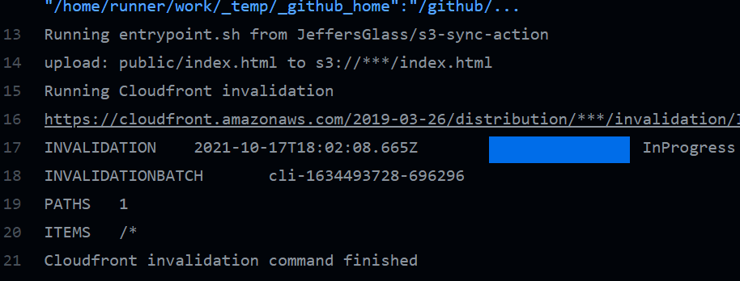
That looks a much better result! And the invalidation appears in the Cloudfront distribution's Invalidations tab as well. As a final test, let's make some further small changes to the index.html file, push them, and see if they'll update/invalidate the CF distribution in real time.
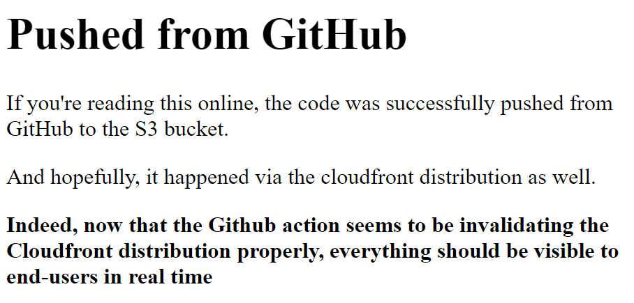
Success! Now, any time a change is pushed to the main branch in the repo, the GitHub Action will push the contents of the public folder to the S3 bucket, and invalidate the associated CloudFront distribution so the results appear for all viewers in realtime. And that was our goal, after all.
Like I mentioned, I ultimately would be interested in using a simple static site generator to create the formatting for the site, rather than uploading raw html/css/js. And that will require some additional CD actions, as well as modifying the target of this push-to-s3 action. But I've solved a fundamental component of a productive workflow, and I'm thrilled.